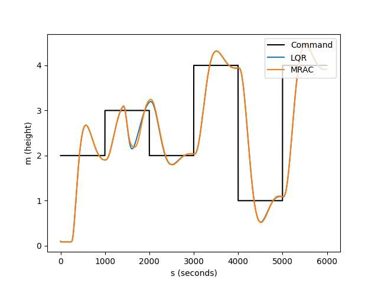

Adaptive Control
Fault-Tolerant Quadrotor Control
A model reference adaptive controller (MRAC) that kept a simulated quadrotor tracking altitude commands through a 67.2% motor thrust loss that crashed the LQR baseline.

The Problem
Placeholder
Placeholder
Approach
Placeholder
- Implemented an LQR baseline for multi-step altitude tracking of a simulated quadrotor in Webots
- Designed a model reference adaptive controller (MRAC) and compared both controllers under 50% and 67.2% motor thrust loss
System diagram or CAD view
Results
Placeholder
- MRAC kept the quadrotor tracking multi-step altitude commands through a 67.2% motor thrust loss that crashed the LQR baseline
- Both controllers held at 50% thrust loss; only MRAC remained stable at 67.2%

What It Means
Placeholder
My Contribution
Placeholder